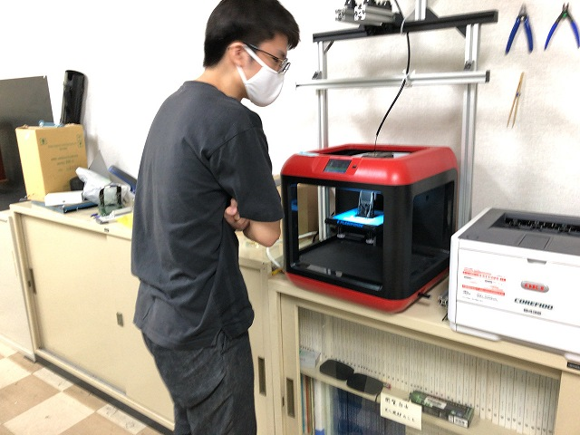
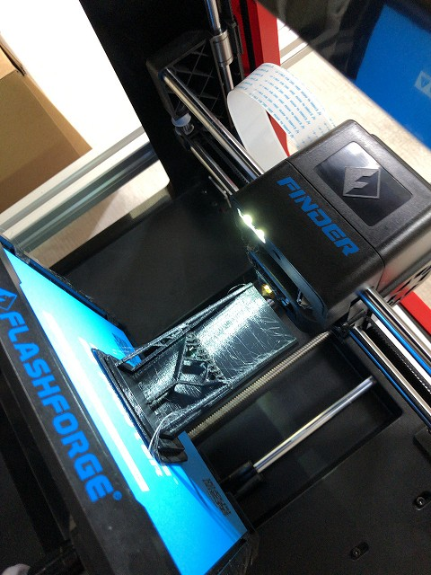
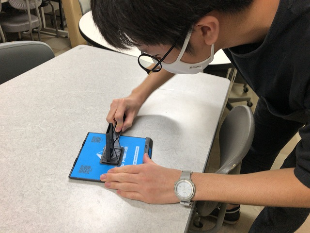
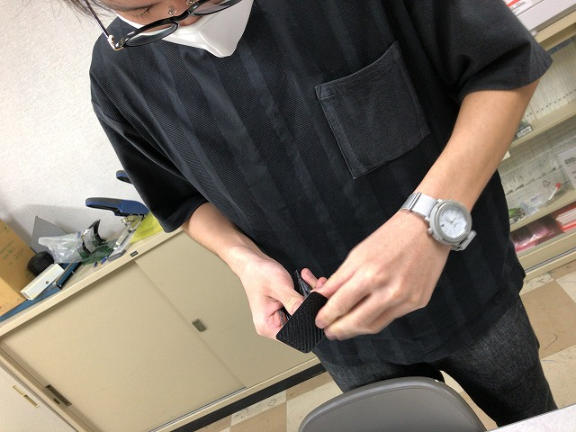
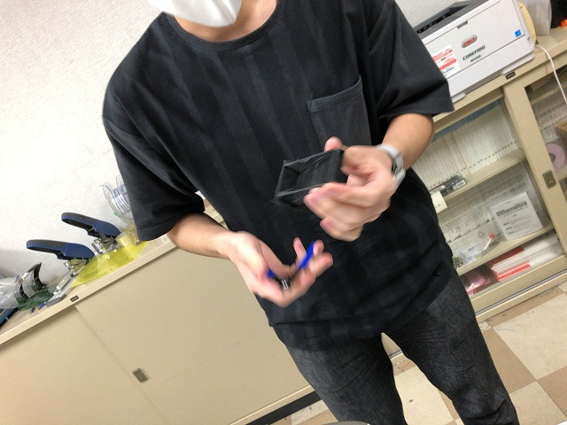
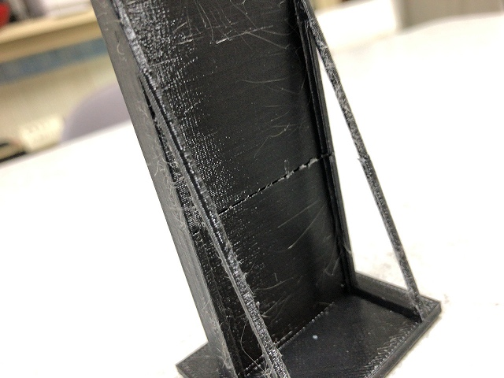
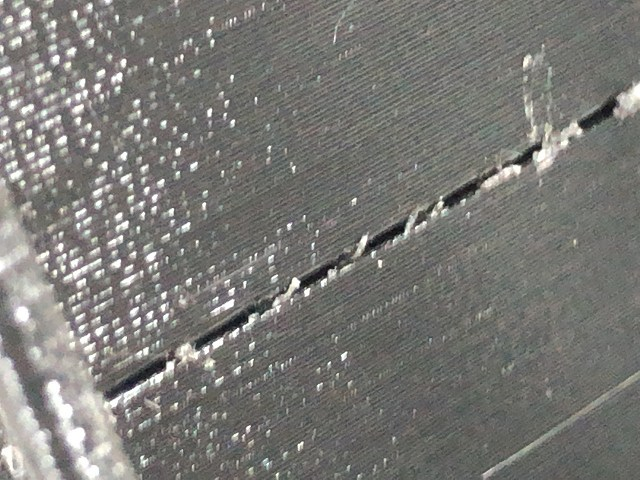
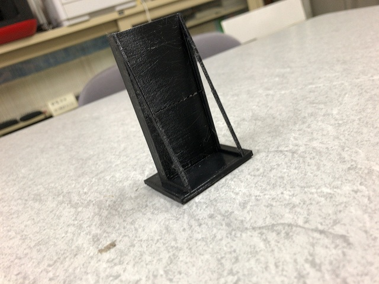

・ サイズ感 (R02.07.09)
B4I口さんが3Dプリンタで概要設計のための出力。画面だとサイズ感がわからないとのことで、実寸の装置を出力していました。

もうちょっとで終わりそう

高さがあるモノ

スクレーパーで剥がして

要らないサポート材を

ニッパーでカット

スリットつき

思ったよりちゃんと出力

詳細設計に入る前にいろいろ出力する予定
BACK
© Measurement System Laboratory, Kyoto Institute of Technology.